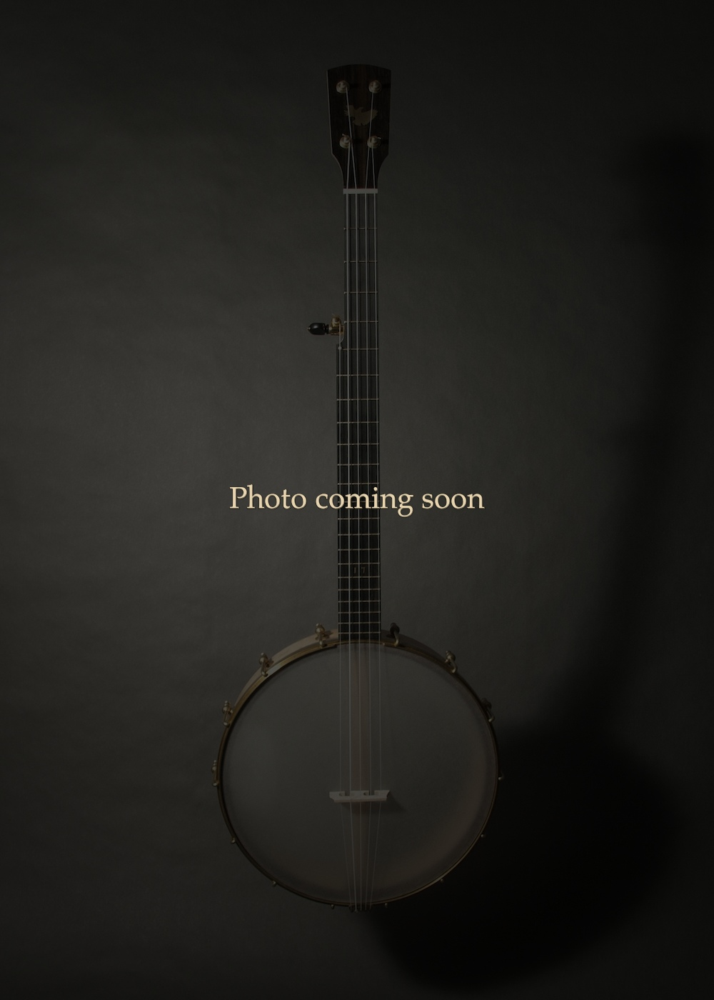

Handcrafted instruments built in small batches in the Annapolis Valley, Nova Scotia, Canada.

A tackhead open-back banjo with a natural skin head. Traditional in form, built to modern playability standards.
A modern open-back banjo built for clawhammer and old-time playing. Maple rim and neck, rosewood fingerboard, and a wooden tone ring.

Fully custom instruments developed individually with players. A one-off approach allowing exploration of materials, design, and sound.
Availability limited. Contact to discuss a potential build.
Join the Waitlist